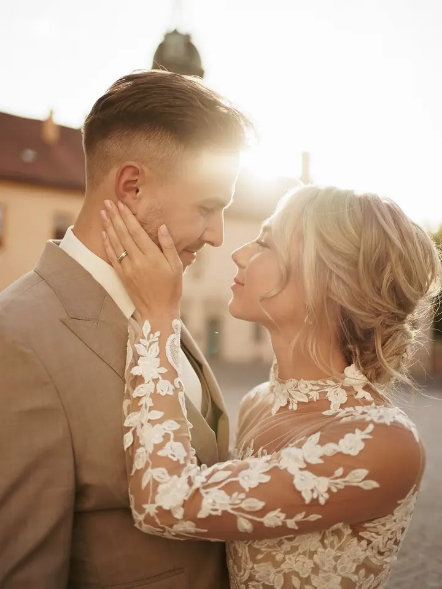
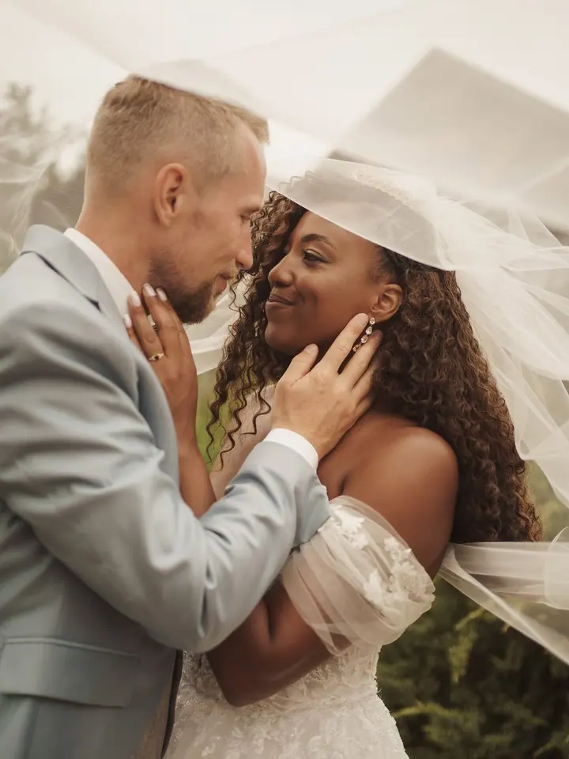
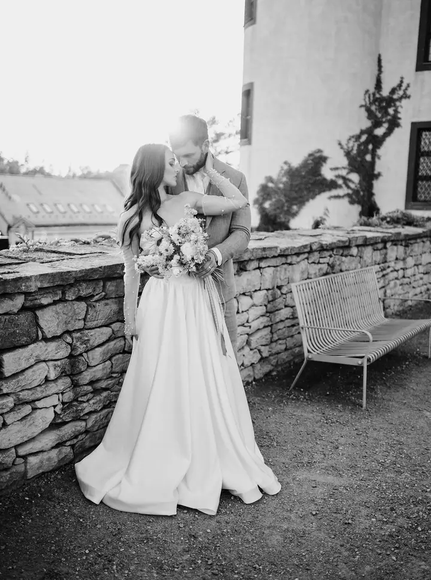

jedna
Svatební fotografie
Každá svatba je jedinečná. Fotím velké okamžiky i tiché chvíle, jemné doteky a pohledy, abyste se ke svému dni mohli kdykoliv vrátit takový, jaký skutečně byl.

Svatební a rodinná fotografka · Pardubický kraj, Ústí nad Orlicí

Jmenuji se Kateřina Fikejzová, ale klidně mi říkejte Káťa. Fotím svatby, rodiny i ty nejmenší miminka po celém Pardubickém kraji. Se mnou můžete být sami sebou, bez strnulých a nucených póz.
Více o mně
Co fotím
jedna
Každá svatba je jedinečná. Fotím velké okamžiky i tiché chvíle, jemné doteky a pohledy, abyste se ke svému dni mohli kdykoliv vrátit takový, jaký skutečně byl.
Uvolněná a přátelská atmosféra, žádné strnulé pózy ani stres. Nejčastěji fotím v přírodě formou procházky, pro nejmenší děti je tu i pohodlí ateliéru.
V klidu a v teple mého ateliéru, v neutrálních barvách a bez nepřirozených pozic. Nejlépe do 14 dnů po narození, miminka fotím až do 3. měsíce.
Postarám se o všechny detaily, od oblečení až po postavení, abyste se cítila krásná a sebevědomá. Šaty si u mě můžete zapůjčit zdarma.
Žádné strnulé pózy, jen přirozené chvíle plné smíchu.
Za objektivem
Jsem svatební a rodinná fotografka, ale především manželka a máma dvou dětí. Svůj domov jsem našla v Jehnědí nedaleko Ústí nad Orlicí a odtud vyrážím fotit po celém Pardubickém kraji.
V mých fotografiích nenajdete strnulé pózy. Zaměřuji se na přirozené a nenucené chvíle: spontánní úsměvy, hravé momenty s dětmi i klidné okamžiky lásky ve vaší rodině. Protože jsem sama rodič, mám pro děti dost trpělivosti a spoustu nápadů, jak je zaujmout.
A kdo jsem mimo objektiv? Chovám kolie, miluji dobré jídlo a jsem oddaná fanynka Taylor Swift. Na Instagramu pravidelně sdílím videa ze zákulisí focení, takže se tam můžeme poznat ještě o kousek víc.
Kateřina
Napište mi přes kontaktní formulář, e-mailem, nebo mi rovnou zavolejte a zjistěte, jestli mám váš termín ještě volný.
Před každým focením se spolu domluvíme na všem, na co se chcete zeptat. U svateb se potkáme zhruba měsíc předem, osobně nebo online, a projdeme harmonogram dne.
V přírodě, v ateliéru nebo na vaší svatbě. Jsem tam pro vás nejen jako fotografka, ale i jako pomocná ruka: pomůžu, poradím, podržím.
Vybrané snímky pečlivě upravím a pošlu vám je, abyste se ke svým vzpomínkám mohli kdykoliv vrátit.
Portfolio
Otázky
Je to na vás. Můžeme vyrazit do přírody, kde je dost prostoru pro hru a pohyb, nebo fotit v ateliéru. Pro miminka, která ještě nechodí, bývá ateliér pohodlnější a bezpečnější.
Ideálně do 14 dnů po narození, kdy jsou miminka spavá a bříško je ještě tolik netrápí. Fotím je ale až do 3. měsíce věku, starší děti pak zahrnu do rodinného focení.
Nejlepší doba je mezi 28. a 34. týdnem. Bříško je už krásně vidět a většina maminek se ještě cítí pohodlně. Šaty si u mě můžete zdarma zapůjčit a na přání zajistím i vizážistku.
Nebojte, sama jsem máma dvou dětí. Budu mít dost trpělivosti a porozumění a také spoustu nápadů, jak je zaujmout. Focení formou procházky je pro většinu dětí zábava.